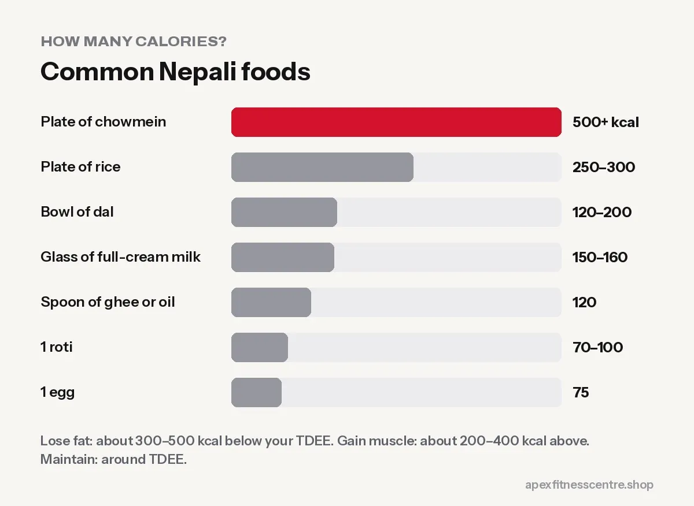

How Many Calories Do I Need a Day? Simple Guide (with Free Calculator)
How to work out your daily calorie needs, what BMR and TDEE mean, how much to eat for fat loss or muscle gain, and how to adjust using real results.

Your daily calorie needs depend on your body size, age, sex and how active you are. The quickest way to get a personal estimate is our free calorie calculator, which uses the widely used Mifflin–St Jeor equation. Then you adjust: eat a little less to lose fat, a little more to gain muscle, and check your weight trend every week.
Two terms you’ll see
BMR (Basal Metabolic Rate)
The energy your body uses at complete rest just to stay alive: breathing, heartbeat, brain, body temperature. For most people, this is the biggest part of daily energy use.
TDEE (Total Daily Energy Expenditure)
Your BMR plus everything else: walking, work, chores, exercise and digesting food. This is roughly how many calories you need to keep your weight the same.
How the calculator works
- It estimates your BMR from your weight, height, age and sex.
- It multiplies BMR by an activity factor:
| Activity level | Typical description |
|---|---|
| Sedentary | Desk job, little exercise |
| Lightly active | Light exercise 1–3 days a week |
| Moderately active | Exercise 3–5 days a week |
| Very active | Hard exercise 6–7 days a week |
| Extra active | Physical job plus hard training |
The result is your estimated TDEE.
Most people overestimate their activity. If you train 3 times a week but sit the rest of the day, “lightly” or “moderately active” is usually more accurate than “very active.”
Calories for your goal
| Goal | Starting point |
|---|---|
| Lose fat | About 300–500 kcal below TDEE |
| Maintain | Around TDEE |
| Gain muscle | About 200–400 kcal above TDEE |
Then check every week and adjust:
- Losing fat goal, but weight not moving after 3 weeks? Reduce by about 100–200 kcal or walk more.
- Gaining muscle goal, but weight not moving? Add about 100–200 kcal.
What calorie targets look like in Nepali food
You don’t need to weigh everything. Rough guide:
- 1 plate of rice: around 250–300 kcal
- 1 bowl of dal: around 120–200 kcal, depending on thickness and ghee
- 1 roti: around 70–100 kcal
- 1 egg: around 75 kcal
- 1 glass full-cream milk: around 150–160 kcal
- 1 spoon of ghee or oil: around 120 kcal
- 1 plate of chowmein: often 500 kcal or more
These are estimates. Cooking style, oil and portion size change them a lot.

Calories aren’t the whole story
- Protein keeps you full and protects muscle. See how much protein you need.
- Vegetables and fibre help you feel satisfied on fewer calories.
- Sleep and stress affect hunger and cravings.
For practical plans, see the weight loss diet plan with Nepali food or the Nepali diet plan for muscle gain.
Frequently asked questions
How many calories should I eat to lose 1 kg a week?
A deficit that large is aggressive for many people. A steady loss of about 0.5 to 1 kg a week is common advice; start with a moderate deficit and adjust using your weekly weight.
Are calorie calculators accurate?
They give a good starting estimate, but every body is different. Your real weight trend over 2 to 4 weeks is the best guide.
Do I need to count calories forever?
No. Many people count for a few weeks to learn portion sizes, then switch to habits like the plate method.
Do I eat more on gym days?
You can eat a little more on training days, but your weekly average matters most.
Sources
- A new predictive equation for resting energy expenditure in healthy individuals (Mifflin et al., American Journal of Clinical Nutrition, 1990)
- WHO fact sheet: obesity and overweight (World Health Organization)
General information, not medical advice. People with medical conditions should plan their diet with a doctor or dietitian.
General information, not medical advice. Ask a doctor if you have a health condition. Results vary from person to person.
Comments
Loading comments…